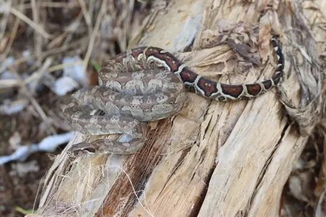
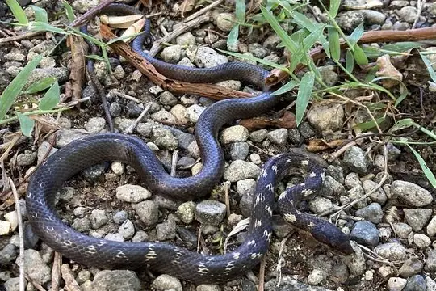
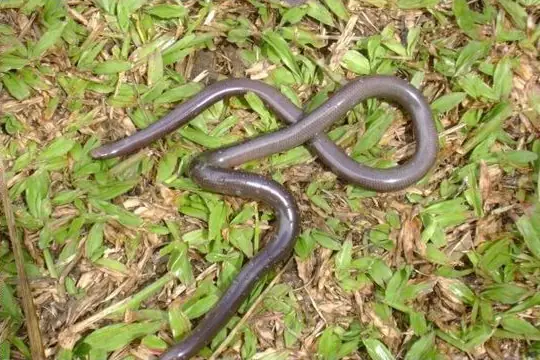
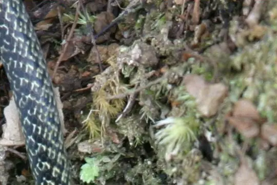

Snakes of Dominica
4 snake species are recorded in Dominica in SnakeList: 0 venomous and 4 non-venomous, from 3 families.
- 4species
- 0venomous
- 4non-venomous
- 3families
Species
Showing 4 species

Dominica BoaBoa nebulosa
Dominican RacerAlsophis sibonius
Dominican Worm SnakeAntillotyphlops dominicanus
Julia's Ground SnakeErythrolamprus juliae
No snakes in Dominica match.
Dominica’s snakes in numbers
- Families: Colubridae 2, Boidae 1, Typhlopidae 1.
- 4 are recorded in no other country in SnakeList: Dominica Boa, Dominican Racer, Dominican Worm Snake, Julia's Ground Snake.